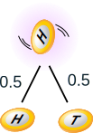
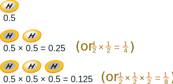
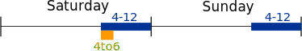
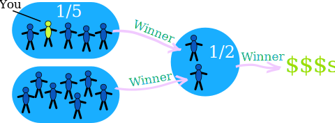

Probability: Independent Events
Life is full of random events!
You need to get a "feel" for them to be a smart and successful person.
The toss of a coin, throwing dice and lottery draws are all examples of random events.
There can be:
Independent Events

Independent Events are not affected by previous events.
This is an important idea!
A coin does not "know" it came up heads before.
And each toss of a coin is a perfect isolated thing.
Example: You toss a coin and it comes up "Heads" three times ... what is the chance that the next toss will also be a "Head"?
The chance is simply ½ (or 0.5) just like ANY toss of the coin.
What it did in the past will not affect the current toss!
Some people think "it is overdue for a Tail", but really truly the next toss of the coin is totally independent of any previous tosses.
Saying "a Tail is due", or "just one more go, my luck is due to change" is called The Gambler's Fallacy
Of course your luck may change, because each toss of the coin has an equal chance.
Probability of Independent Events
"Probability" (or "Chance") is how likely something is to happen.
So how do we calculate probability?
Probability of an event happening = Number of ways it can happen Total number of outcomes
Example: what is the probability of getting a "Head" when tossing a coin?
Number of ways it can happen: 1 (Head)
Total number of outcomes: 2 (Head and Tail)
So the probability = 1 2 = 0.5

Example: what is the probability of getting a "4" or "6" when rolling a die?
Number of ways it can happen: 2 ("4" and "6")
Total number of outcomes: 6 ("1", "2", "3", "4", "5" and "6")
So the probability = 2 6 = 1 3 = 0.333...
Ways of Showing Probability
Probability goes from 0 (imposssible) to 1 (certain):

It is often shown as a decimal or fraction.
Example: the probability of getting a "Head" when tossing a coin:
- As a decimal: 0.5
- As a fraction: 1/2
- As a percentage: 50%
- Or sometimes like this: 1-in-2
Two or More Events
We can calculate the chances of two or more independent events by multiplying the chances.
Example: Probability of 3 Heads in a Row
For each toss of a coin a Head has a probability of 0.5:

And so the chance of getting 3 Heads in a row is 0.125
So each toss of a coin has a ½ chance of being Heads, but lots of Heads in a row is unlikely.
Example: Why is it unlikely to get, say, 7 heads in a row, when each toss of a coin has a ½ chance of being Heads?
Because we are asking two different questions:
Question 1: What is the probability of 7 heads in a row?
Question 2: When we have just got 6 heads in a row, what is the probability that the next toss is also a head?
You can have a play with the Quincunx to see how lots of independent effects can still have a pattern.
Notation
We use "P" to mean "Probability Of",
So, for Independent Events:
P(A and B) = P(A) × P(B)
Probability of A and B equals the probability of A times the probability of B
Example: your boss (to be fair) randomly assigns everyone an extra 2 hours work on weekend evenings between 4 and midnight.
What are the chances you get Saturday between 4 and 6?

Day: there are two days on the weekend, so P(Saturday) = 0.5
Time: you want the 2 hours of "4 to 6", out of the 8 hours of 4 to midnight):
P("4 to 6") = 2/8 = 0.25
And:
| P(Saturday and "4 to 6") | = P(Saturday) × P("4 to 6") |
| = 0.5 × 0.25 | |
| = 0.125 |
Or a 12.5% Chance
(Note: we could ALSO have worked out that you wanted 2 hours out of a total possible 16 hours, which is 2/16 = 0.125. Both methods work here.)
Another Example
Example: the chance of a flight being delayed is 0.2 (=20%), what are the chances of no delays on a round trip
The chance of a flight not having a delay is 1 − 0.2 = 0.8, so these are all the possible outcomes:
| 0.8 × 0.8 = | 0.64 chance of no delays | |
| 0.2 × 0.8 = | 0.16 chance of 1st flight delayed | |
| 0.8 × 0.2 = | 0.16 chance of return flight delayed | |
| 0.2 × 0.2 = | 0.04 chance of both flights delayed |
When we add all the possibilities we get:
0.64 + 0.16 + 0.16 + 0.04 = 1.0
They all add to 1.0, which is a good way of checking our calculations.
Result: 0.64, or a 64% chance of no delays
One More Example
Imagine there are two groups:
- A member of each group gets randomly chosen for the winners circle,
- then one of those gets randomly chosen to get the big money prize:

What is your chance of winnning the big prize?
- there is a 1/5 chance of going to the winners circle
- and a 1/2 chance of winning the big prize
So you have a 1/5 chance followed by a 1/2 chance ... which makes a 1/10 chance overall:
15 × 12 = 15 × 2 = 110
Or we can calculate using decimals (1/5 is 0.2, and 1/2 is 0.5):
0.2 x 0.5 = 0.1
So your chance of winning the big money is 0.1 (which is the same as 1/10).
Coincidence!
Many "Coincidences" are, in fact, likely.
Example: you are in a room with 30 people, and find that Zach and Anna celebrate their birthday on the same day.
Do you say:
- "Wow, how strange !", or
- "That seems reasonable, with so many people here"
In fact there is a 70% chance that would happen ... so it is likely.

Why is the chance so high?
Because you are comparing everyone to everyone else (not just one to many).
And with 30 people that is 435 comparisons
(Read Shared Birthdays to find out more.)
Example: Snap!
Did you ever say something at exactly the same time as someone else?
Wow, how amazing!
But you were probably sharing an experience (movie, journey, whatever) and so your thoughts were similar.
And there are only so many ways of saying something ...
... so it is like the card game "Snap!" (also called Slaps or Slapjack) ...
... if you speak enough words together, they will eventually match up.
So, maybe not so amazing, just simple chance at work.
Can you think of other cases where a "coincidence" was simply a likely thing?
Conclusion
- Probability is: (Number of ways it can happen) / (Total number of outcomes)
- Dependent Events (such as removing marbles from a bag) are affected by previous events
- Independent events (such as a coin toss) are not affected by previous events
- We can calculate the probability of two or more Independent events by multiplying
- Not all coincidences are really unlikely (when you think about them).